# flex布局
# 一、flex弹性盒模型
对于某个元素只要声明了display: flex;，那么这个元素就成为了弹性容器，具有flex弹性布局的特性。
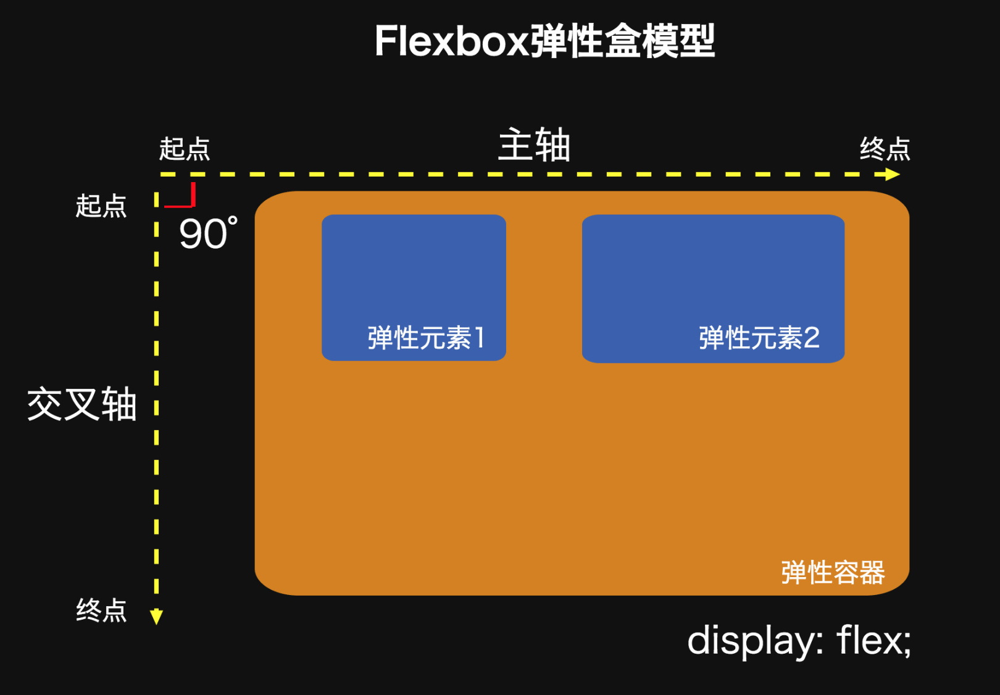
- 每个弹性容器都有两根轴：主轴和交叉轴，两轴之间成90度关系。注意：水平的不一定就是主轴。
- 每根轴都有起点和终点，这对于元素的对齐非常重要。
- 弹性容器中的所有子元素称为<弹性元素>，弹性元素永远沿主轴排列。
- 弹性元素也可以通过display:flex设置为另一个弹性容器，形成嵌套关系。因此一个元素既可以是弹性容器也可以是弹性元素。
弹性容器的两根轴非常重要，所有属性都是作用于轴的。下面从轴入手，将所有flex布局属性串起来理解。
# 二、主轴
flex布局是一种一维布局模型，一次只能处理一个维度（一行或者一列）上的元素布局，作为对比的是二维布局CSS Grid Layout，可以同时处理行和列上的布局。
也就是说，flex布局大部分的属性都是作用于主轴的，在交叉轴上很多时候只能被动地变化。
# 1. 主轴的方向
我们可以在弹性容器上通过 flex-direction 修改主轴的方向。如果主轴方向修改了，那么：
- 交叉轴就会相应地旋转90度。
- 弹性元素的排列方式也会发生改变，因为弹性元素永远沿主轴排列。
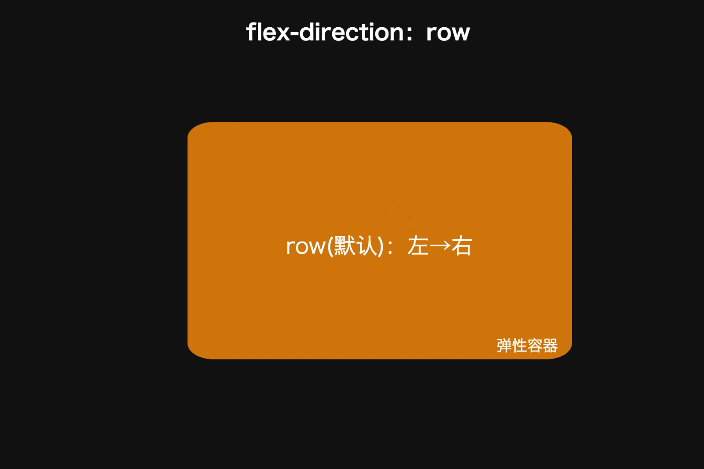
flex-direction:row
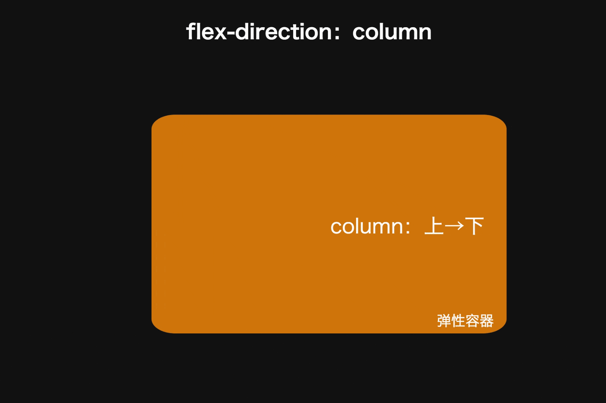
flex-direction:column
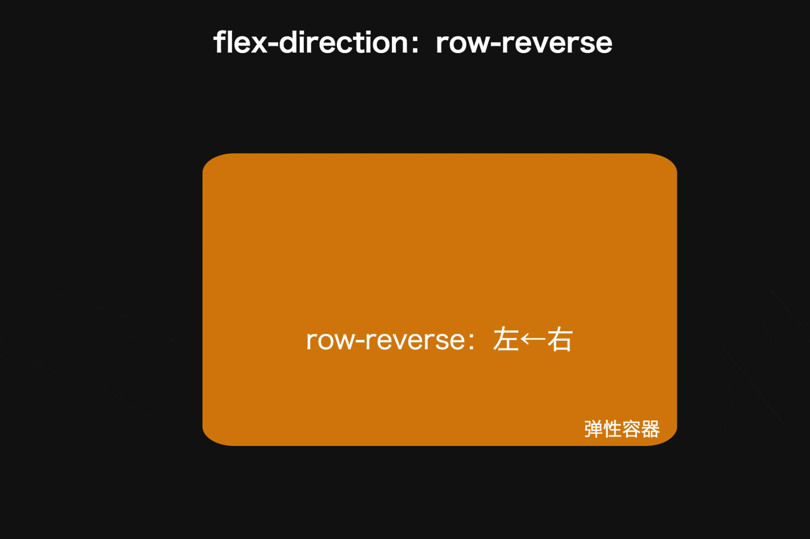
flex-direction:row-reverse
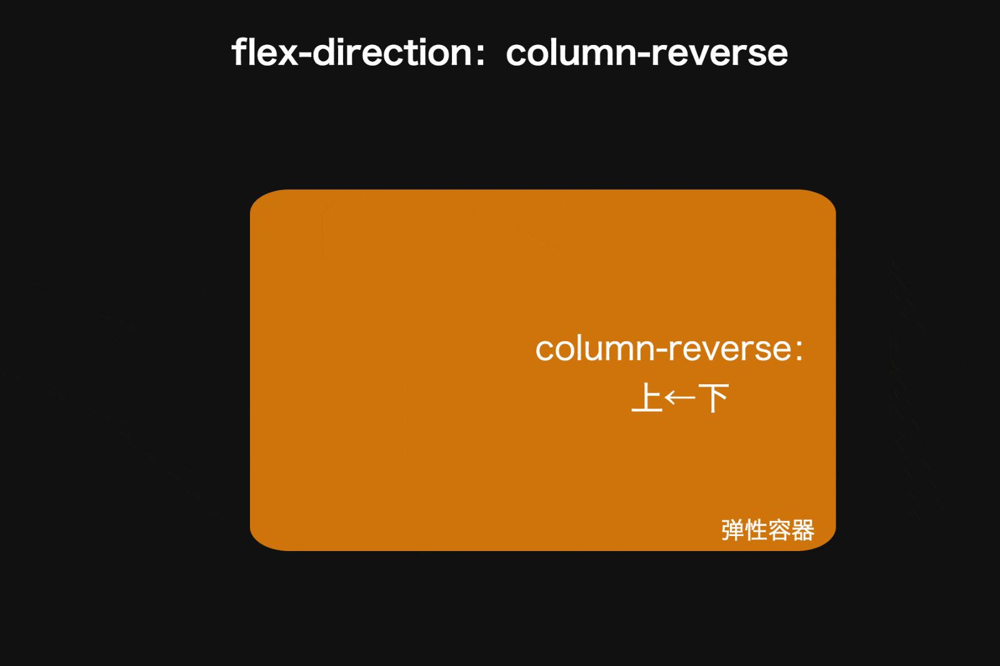
flex-direction:column-reverse
# 2. 沿主轴的排列处理
弹性元素永远沿主轴排列，那么如果主轴排不下，该如何处理？
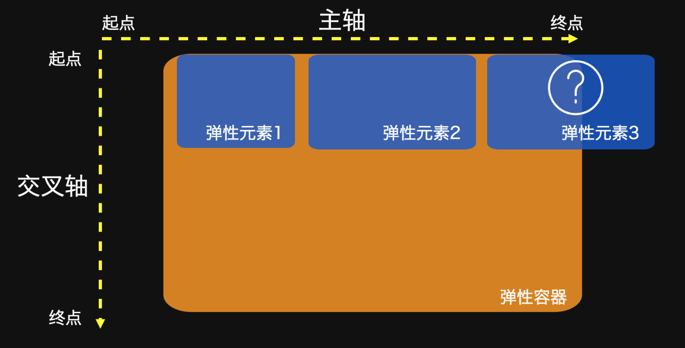
通过设置flex-wrap: nowrap | wrap | wrap-reverse可使得主轴上的元素不折行、折行、反向折行。
默认是nowrap不折行，难道任由元素直接溢出容器吗？当然不会，那么这里就涉及到元素的弹性伸缩应对，下面会讲到。
wrap折行，顾名思义就是另起一行，那么折行之后行与行之间的间距（对齐）怎样调整？这里又涉及到交叉轴上的多行对齐。
wrap-reverse反向折行，是从容器底部开始的折行，但每行元素之间的排列仍保留正向。
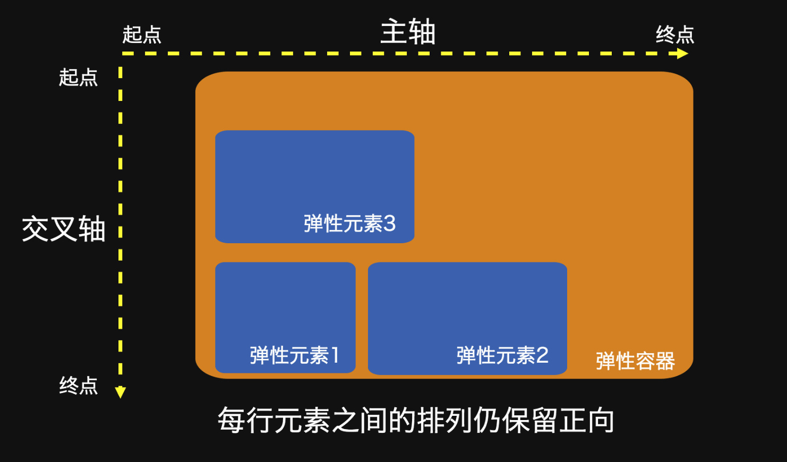
# 3. 一个复合属性
flex-flow = flex-drection + flex-wrap
flex-flow相当于规定了flex布局的“工作流(flow)”
flex-flow: row nowrap;
# 三、元素如何弹性伸缩应对
当flex-wrap: nowrap;不折行时，容器宽度有剩余/不够分，弹性元素们该怎么“弹性”地伸缩应对？
这里针对上面两种场景，引入两个属性(需应用在弹性元素上)
flex-shrink：缩小比例（容器宽度<元素总宽度时如何收缩）flex-grow：放大比例（容器宽度>元素总宽度时如何伸展）
# 1. flex-shrink: 缩小比例
来看下以下场景，弹性容器#container宽度是200px，一共有三个弹性元素，宽度分别是50px、100px、120px。在不折行的情况下，此时容器宽度是明显不够分配的。
实际上，flex-shrink默认为1，也就是当不够分配时，元素都将等比例缩小，占满整个宽度，如下图。
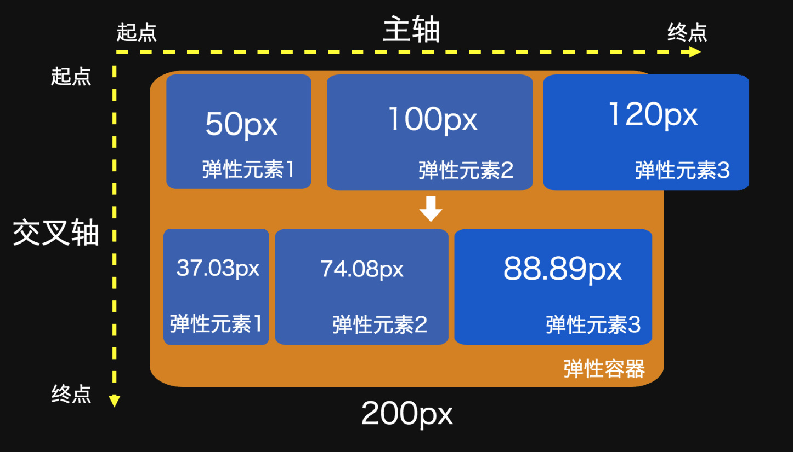
#container {
display: flex;
flex-wrap: nowrap;
}
2
3
4
元素收缩的计算方法
真的是等比缩小(每个元素各减去70/3的宽度)吗？这里稍微深究一下它的收缩计算方法。
- 弹性元素1：50px→37.03px
- 弹性元素2：100px→74.08px
- 弹性元素3：120px→88.89px
先抛结论：flex-shrink: 1并非严格等比缩小，它还会考虑弹性元素本身的大小。
- 容器剩余宽度：
-70px - 缩小因子的分母：
1*50 + 1*100 + 1*120 = 270 (1为各元素flex-shrink的值) - 元素1的缩小因子：
1*50/270 - 元素1的缩小宽度为缩小因子乘于容器剩余宽度：
1*50/270 * (-70) - 元素1最后则缩小为：
50px + (1*50/270 *(-70)) = 37.03px
加入弹性元素本身大小作为计算方法的考虑因素，主要是为了避免将一些本身宽度较小的元素在收缩之后宽度变为0的情况出现。
# 2. flex-grow: 放大比例
同样，弹性容器#container宽度是200px，但此时只有两个弹性元素，宽度分别是50px、100px。此时容器宽度是有剩余的。
那么剩余的宽度该怎样分配？而flex-grow则决定了要不要分配以及各个分配多少。
（1）在flex布局中，容器剩余宽度默认是不进行分配的，也就是所有弹性元素的flex-grow都为0。
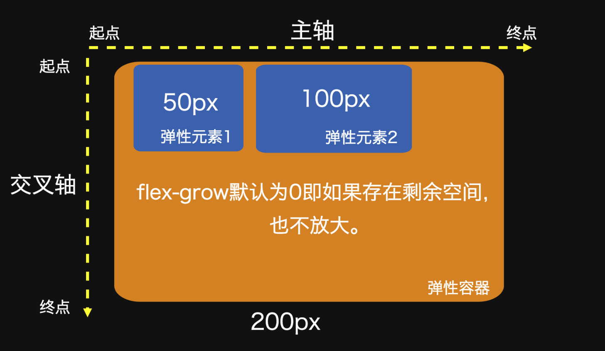
（2）通过指定flex-grow为大于零的值，实现容器剩余宽度的分配比例设置。
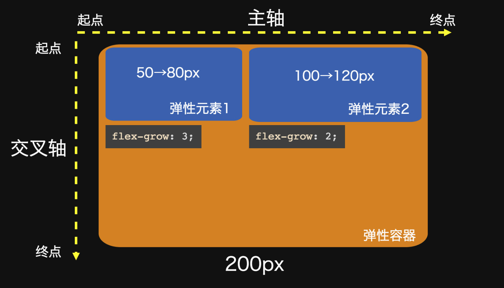
元素放大的计算方法
放大的计算方法并没有与缩小一样，将元素大小纳入考虑。
仅仅按flex-grow声明的份数算出每个需分配多少，叠加到原来的尺寸上。
- 容器剩余宽度：
50px - 分成每份：
50px / (3+2) = 10px - 元素1放大为：
50px + 3 * 10 = 80px
无多余宽度时，flex-grow无效
下图中，弹性容器的宽度正好等于元素宽度总和，无多余宽度，此时无论flex-grow是什么值都不会生效。
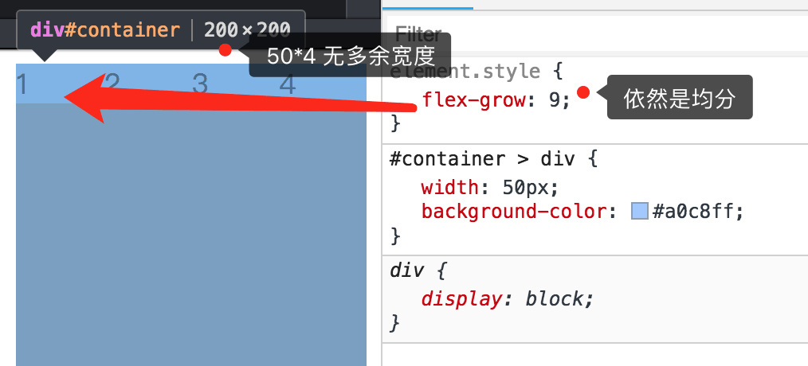
同理，对于flex-shrink，在容器宽度有剩余时也是不会生效的。因此这两个属性是针对两种不同场景的互斥属性。
# 四、弹性处理与刚性尺寸
在进行弹性处理之余，其实有些场景我们更希望元素尺寸固定，不需要进行弹性调整。设置元素尺寸除了width和height以外，flex还提供了一个flex-basis属性。
flex-basis设置的是元素在主轴上的初始尺寸，所谓的初始尺寸就是元素在flex-grow和flex-shrink生效前的尺寸。
# 1. 与width/height的区别
首先以width为例进行比较。看下下面的例子。#container {display:flex;}
<div id="container">
<div>11111</div>
<div>22222</div>
</div>
2
3
4
(1) 两者都为0
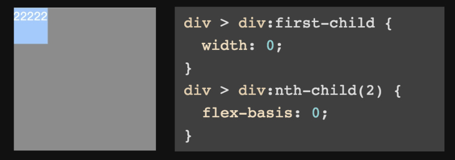
- width: 0 —— 完全没显示
- flex-basis: 0 —— 根据内容撑开宽度
(2) 两者非0
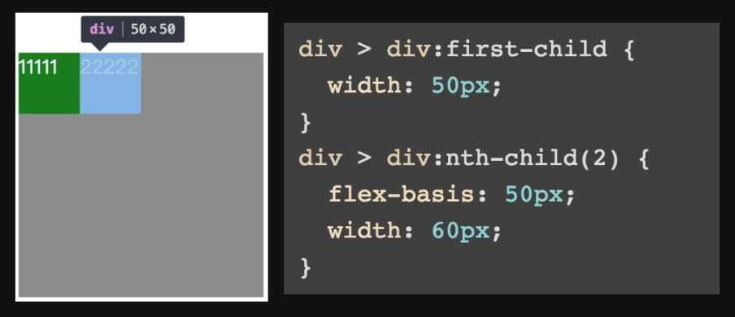
- width: 非0;
- flex-basis: 非0 —— 数值相同时两者等效
—— 同时设置，flex-basis优先级高
(3) flex-basis为auto
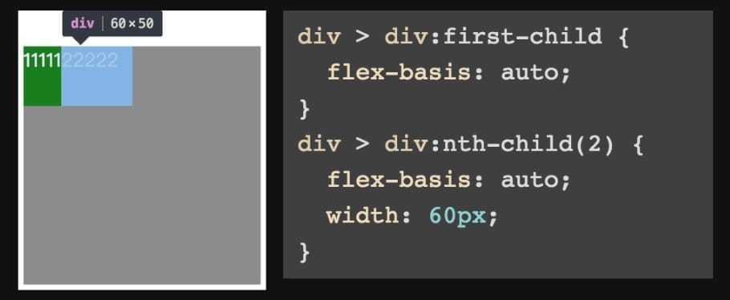
flex-basis为auto时，如设置了width则元素尺寸由width决定；没有设置则由内容决定
(4) flex-basis == 主轴上的尺寸 != width
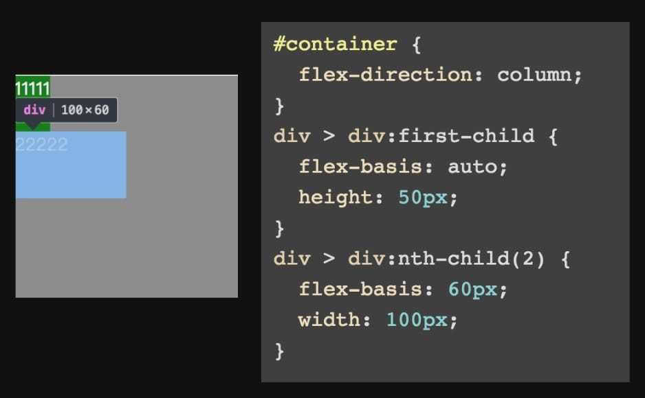
- 将主轴方向改为：上→下
- 此时主轴上的尺寸是元素的height
- flex-basis == height
# 2. 常用的复合属性 flex
这个属性应该是最容易迷糊的一个，下面揭开它的真面目。
flex = flex-grow + flex-shrink + flex-basis
复合属性，前面说的三个属性的简写。
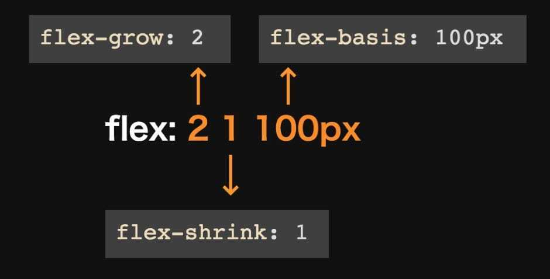
一些简写
- flex: 1 = flex: 1 1 0%
- flex: 2 = flex: 2 1 0%
- flex: auto = flex: 1 1 auto;
- flex: none = flex: 0 0 auto; // 常用于固定尺寸 不伸缩
flex:1 和 flex:auto 的区别
其实可以归结于flex-basis:0和flex-basis:auto的区别。
flex-basis是指定初始尺寸，当设置为0时（绝对弹性元素），此时相当于告诉flex-grow和flex-shrink在伸缩的时候不需要考虑我的尺寸；相反当设置为auto时（相对弹性元素），此时则需要在伸缩时将元素尺寸纳入考虑。
因此从下图（转自W3C）可以看到绝对弹性元素如果flex-grow值是一样的话，那么他们的尺寸一定是一样的。
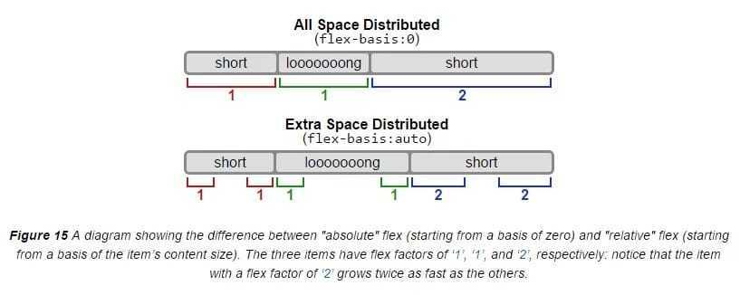
# 五、容器内如何对齐
前面讲完了元素大小关系之后，下面是另外一个重要议题——如何对齐。可以发现上面的所有属性都是围绕主轴进行设置的，但在对齐方面则不得不加入作用于交叉轴上。需要注意的是这些对齐属性都是作用于容器上。
# 1. 主轴上的对齐方式
justify-content
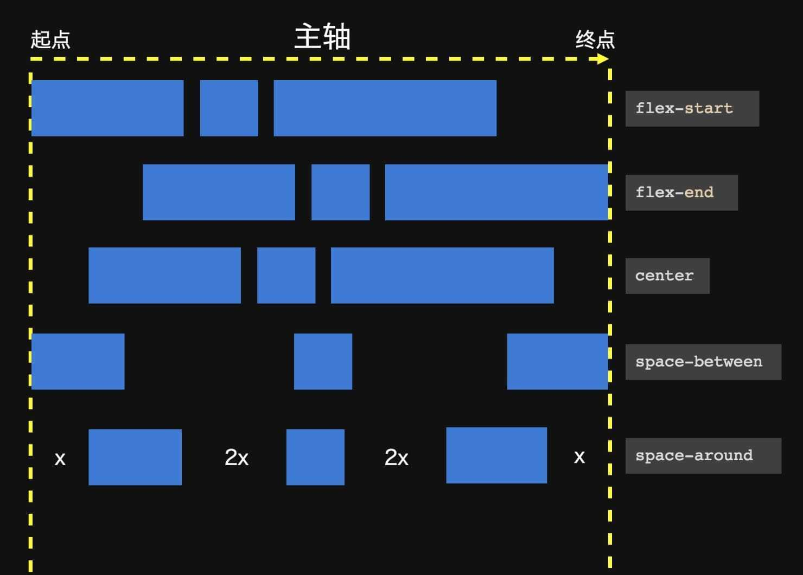
# 2. 交叉轴上的对齐方式
主轴上比较好理解，重点是交叉轴上。因为交叉轴上存在单行和多行两种情况。
交叉轴上的单行对齐
align-items
默认值是stretch，当元素没有设置具体尺寸时会将容器在交叉轴方向撑满。
当align-items不为stretch时，此时除了对齐方式会改变之外，元素在交叉轴方向上的尺寸将由内容或自身尺寸（宽高）决定。
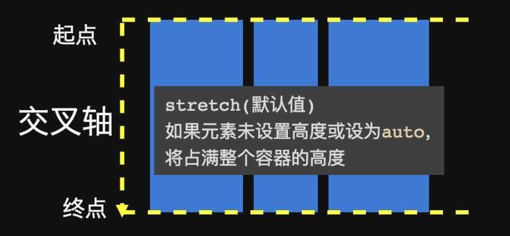
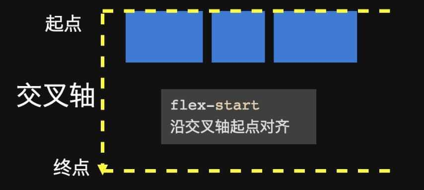
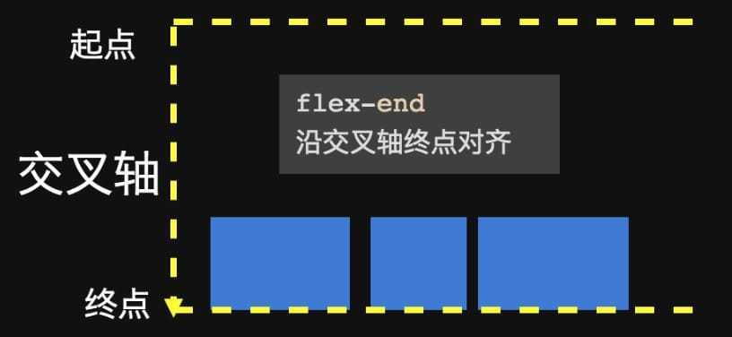
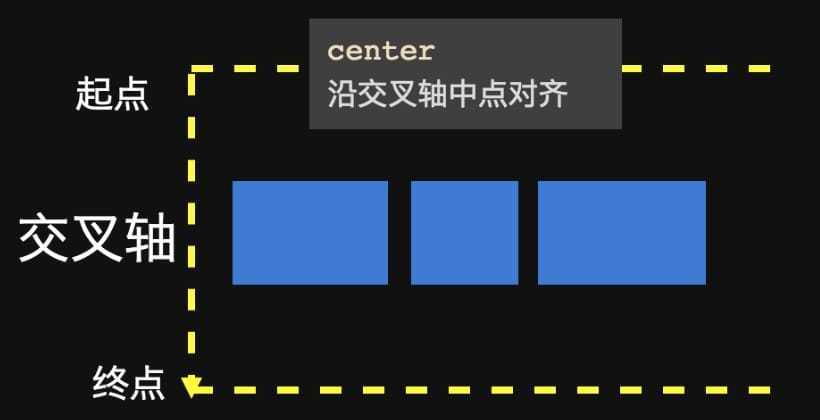
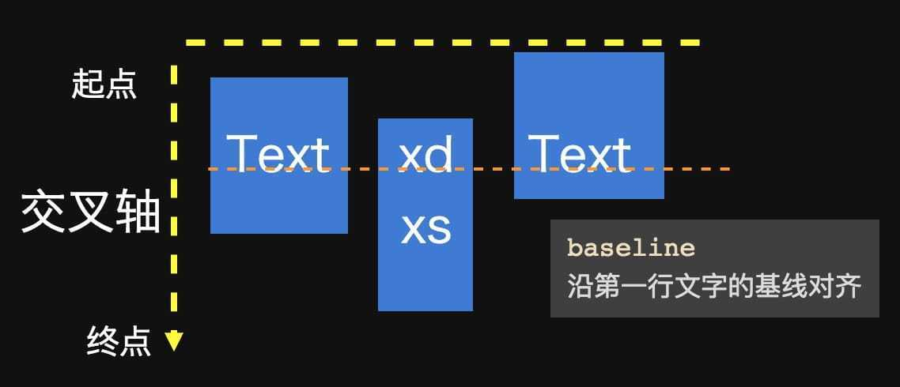
注意，交叉轴不一定是从上往下，这点再次强调也不为过。
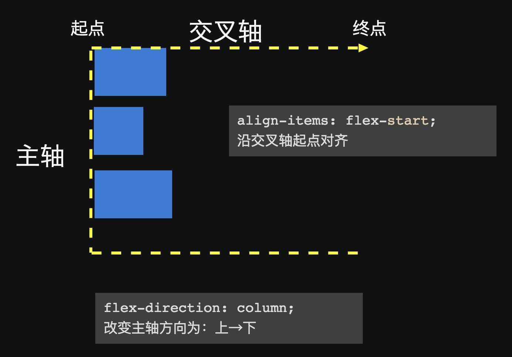
交叉轴上的多行对齐
还记得可以通过flex-wrap: wrap使得元素在一行放不下时进行换行。在这种场景下就会在交叉轴上出现多行，多行情况下，flex布局提供了align-content属性设置对齐。
align-content与align-items比较类似，同时也比较容易迷糊。下面会将两者对比着来看它们的异同。
首先明确一点：align-content只对多行元素有效，会以多行作为整体进行对齐，容器必须开启换行。
align-content: stretch | flex-start | flex-end | center | space-between | space-around
align-items: stretch | flex-start | flex-end | center | baseline
2
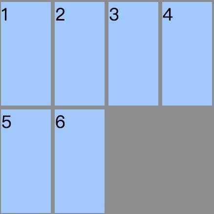
当我们将align-items改为flex-start或者给弹性元素设置一个具体高度，此时效果是行与行之间形成了间距。
#container {
align-items: flex-start;
align-content: stretch;
}
/*或者*/
#container {
align-content: stretch;
}
#container > div {
height: 30px;
}
2
3
4
5
6
7
8
9
10
11
12
为什么？因为align-content会以整行为单位，此时会将整行进行拉伸占满交叉轴；而align-items设置了高度或者顶对齐，在不能用高度进行拉伸的情况下，选择了用间距。
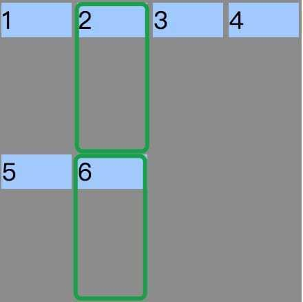
尝试把align-content设置为顶对齐，此时以行为单位，整体高度通过内容撑开。
而align-items仅仅管一行，因此在只有第一个元素设置了高度的情况下，第一行的其他元素遵循align-items: stretch也被拉伸到了50px。而第二行则保持高度不变。
#container {
align-items: stretch;
align-content: flex-start;
}
#container > div:first-child {
height: 50px;
}
2
3
4
5
6
7
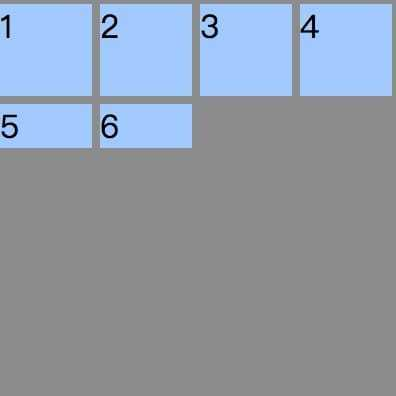
两者的区别还是不明显？来看下面这个例子。
这里仅对第二个元素的高度进行设置，其他元素高度则仍保持内容撑开。
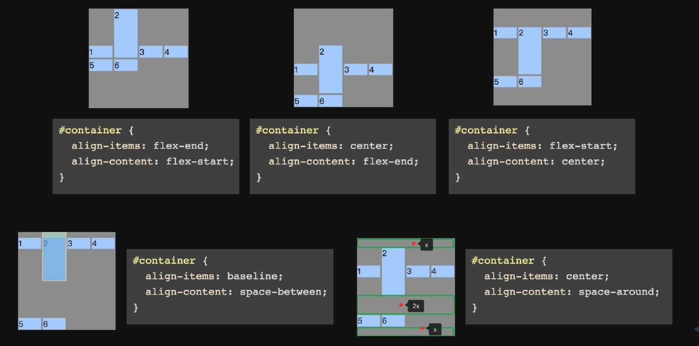
以第一个图为例，会发现align-content会将所有行进行顶对齐，然后第一行由于第二个元素设置了较高的高度，因此体现出了底对齐。
两者差异总结：
- 两者“作用域”不同
- align-content管全局(所有行视为整体)
- align-items管单行
能否更灵活地设置交叉轴对齐
除了在容器上设置交叉轴对齐，还可以通过align-self单独对某个元素设置交叉轴对齐方式。
- 值与
align-items相同 - 可覆盖容器的
align-items属性 - 默认值为
auto，表示继承父元素的align-items属性
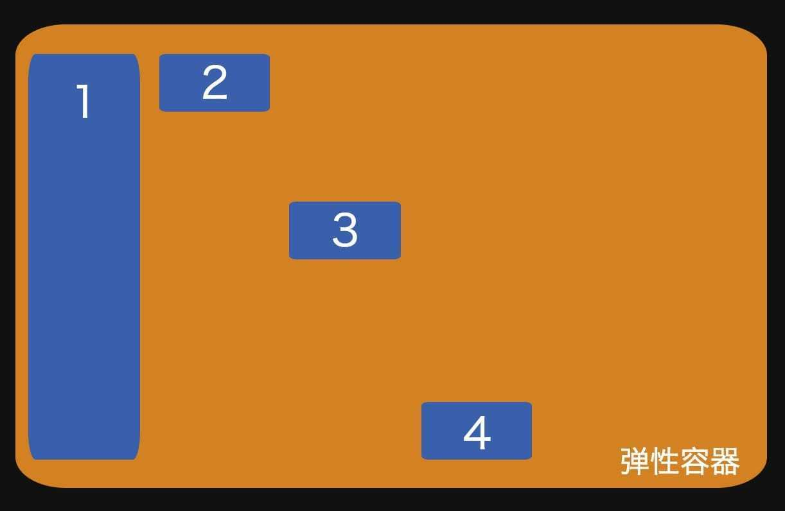
#container {
display: flex;
align-items: flex-start;
}
#container > div:first-child {
align-self: stretch;
}
#container > div:nth-child(3) {
align-self: center;
}
#container > div:nth-child(4) {
align-self: flex-end;
}
2
3
4
5
6
7
8
9
10
11
12
13
14
15
16
# 六、其他
# order：更优雅地调整元素顺序
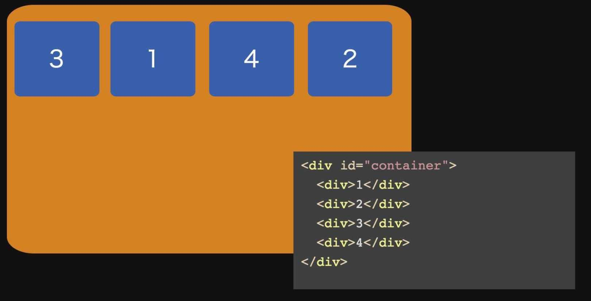
#container > div:first-child {
order: 2;
}
#container > div:nth-child(2) {
order: 4;
}
#container > div:nth-child(3) {
order: 1;
}
#container > div:nth-child(4) {
order: 3;
}
2
3
4
5
6
7
8
9
10
11
12
order：可设置元素之间的排列顺序
- 数值越小，越靠前，默认为0
- 值相同时，以dom中元素排列为准
# 七、总结
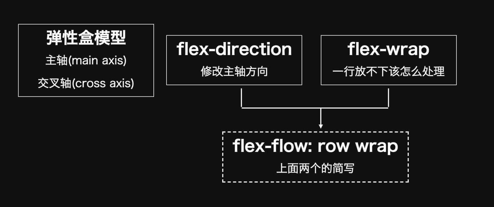
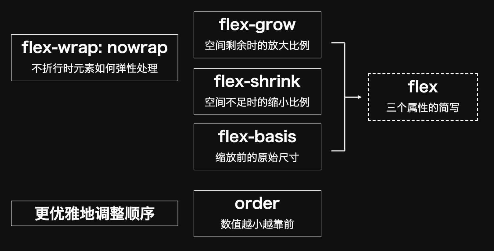
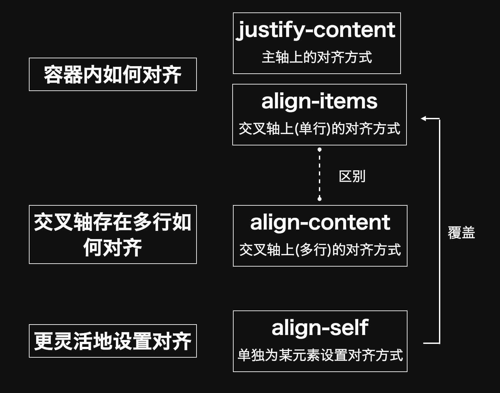
附 参考阮老师博文中的骰子练习，我做了张图，大家不妨可以各自实现下，理解之后应该能够比较轻松地写出来
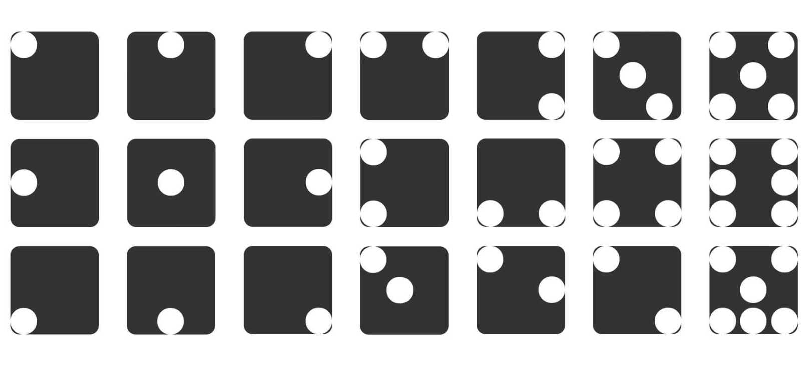